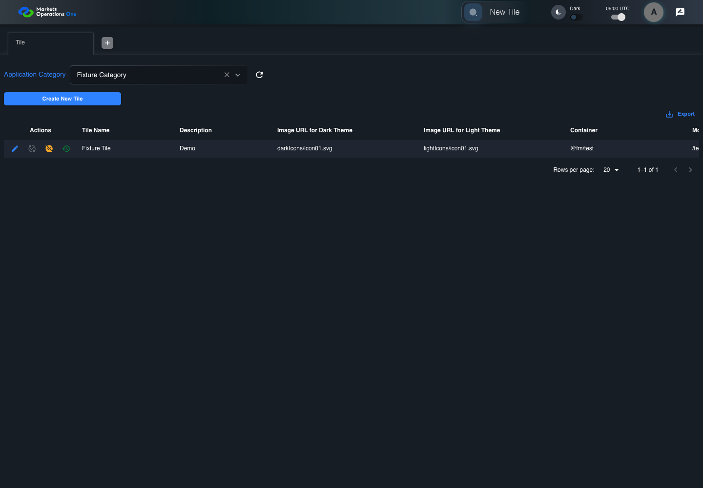
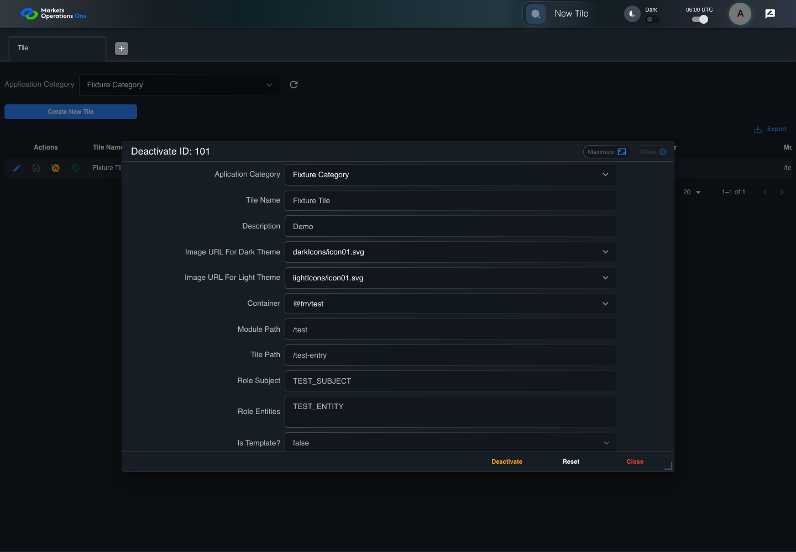
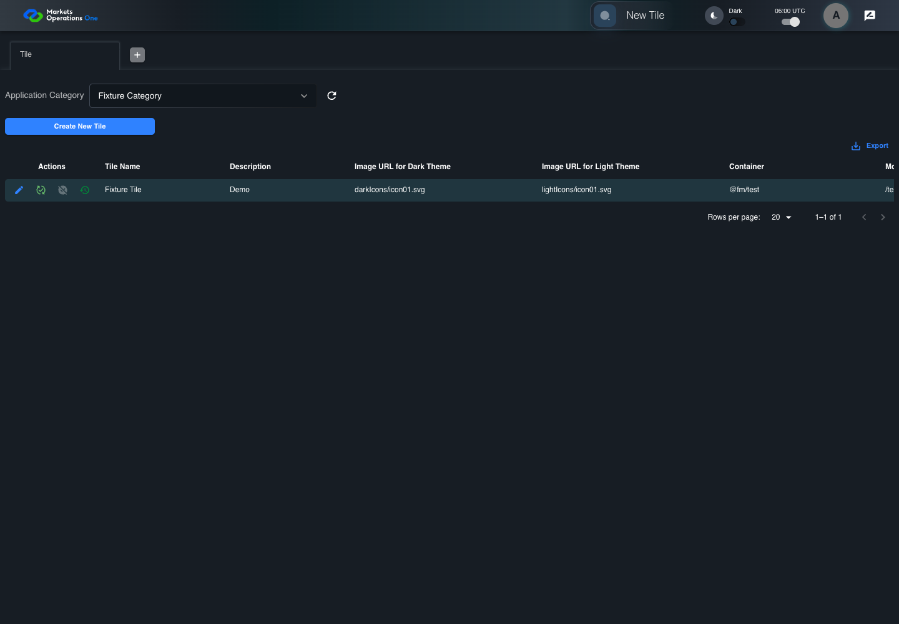

UI-ADM-TIL-011 actual administration UI with step evidence
PASS · application/run-050/ui-adm-til-011-actual-administration-ui-with-step-evidence-bd6e6bb9b7d2-attempt-1 · ACTUAL_APPLICATION_LOCAL_SERVICES
Actual current React administration screens. Controlled browser login supplies UI-ADMIN-01 and TEST_OWNER, or the declared SUPER_USER. Controlled BFF routes return the case-declared records. Other controlled saves persist submitted field values. This run establishes frontend handling only. It does not execute BFF validation, storage, audit generation, or authorization.
2026-10-22T06:00:11.206Z to 2026-10-22T06:00:15.713Z
Assertions and result · Artifact manifest · Exact run inputs and source hashes
Result SHA-256:06a91d0e43af3050f656bc3266c717ef91f150afa5dca004d7fa2fdee20bc6fdMachine observations
- ui-origin-admin-requests.json
8126d37d9dd818585da815bf7ce850b84ba9134f3c883382b07d213c5b9aea4b
Screenshot capture: CAPTURED. Named frames: 9.
Step screenshot bindings: COMPLETE. 8/8 canonical steps have execution screenshots.
Bindings measure structural coverage only. They do not establish screenshot content quality or relevance.
Screenshot content review: NOT_REVIEWED. Recorded context: 0/9 frames. Identical image bytes: 0 repeated frames. Recorded context does not establish human visual review.
Canonical step timeline
Given Admin A is authenticated as fixture UI-ADMIN-01 with the case-specific permissions
Execution: PASSED.
1. step-01 Visible state after step 1: Given Admin A is authenticated as fixture UI-ADMIN-01 with the case-specific permissions
2026-10-22T06:00:12.390Z · 1440×1000
Step: /Users/lushevol/code/github/ratan-release-impact/workbench/tasks/ui-test-coverage-20261022/test-cases.md:8965
SHA-256:5b18e61c9d4c5c1f0cee1300bdcda34b1418a25c1a97509d35e55f2dac5d5abcAnd the Tile admin screen is open for UI-ADMIN-01; fixture record 101 is active and has Tile Name Fixture Tile; its owner is TEST_OWNER; Application Category Fixture Category is selected; the deactivate response returns record 101 with active false
Execution: PASSED.
2. step-02 Visible state after step 2: And the Tile admin screen is open for UI-ADMIN-01; fixture record 101 is active and has Tile Name Fixture Tile; its owner is TEST_OWNER; Application Category Fixture Category is selected; the deactivate response returns record 101 with active false
2026-10-22T06:00:13.459Z · 1440×1000
Step: /Users/lushevol/code/github/ratan-release-impact/workbench/tasks/ui-test-coverage-20261022/test-cases.md:8966
SHA-256:187d088251f4ca00040c6fafaf4bd7da837d7bbef4f90511d64a415c164319c4When Admin A clicks icon button named "Deactivate" inside row with Record Id "101" in the "Tile" administration data grid
Execution: PASSED.
3. step-03 Visible state after step 3: When Admin A clicks icon button named "Deactivate" inside row with Record Id "101" in the "Tile" administration data grid
2026-10-22T06:00:13.879Z · 1440×1000
Step: /Users/lushevol/code/github/ratan-release-impact/workbench/tasks/ui-test-coverage-20261022/test-cases.md:8967
SHA-256:d921ad487ab0cf6ee7a4d67a409d876a28c831e35b707ad3f0c9511f1a3ec50cAnd Admin A clicks button named "Deactivate" inside the dialog named "deactivate ID: 101" inside the "Tile" administration tabpanel
Execution: PASSED.4. step-04 Visible state after step 4: And Admin A clicks button named "Deactivate" inside the dialog named "deactivate ID: 101" inside the "Tile" administration tabpanel
2026-10-22T06:00:14.182Z · 1440×1000
Step: /Users/lushevol/code/github/ratan-release-impact/workbench/tasks/ui-test-coverage-20261022/test-cases.md:8968
SHA-256:c71a822421f7deecd67038e2962598d23e33cfdb983595e72a8fd6463583062cThen cell named "Verified?" inside row with Record Id "101" in the "Tile" administration data grid contains the error icon with tooltip "Unverified or Deactivated"
Execution: PASSED.5. step-05 Visible state after step 5: Then cell named "Verified?" inside row with Record Id "101" in the "Tile" administration data grid contains the error icon with tooltip "Unverified or Deactivated"
2026-10-22T06:00:14.715Z · 1440×1000
Step: /Users/lushevol/code/github/ratan-release-impact/workbench/tasks/ui-test-coverage-20261022/test-cases.md:8969
SHA-256:87117030294d95bc9a68a3e98566ac87bd43ebc447866cecdebaa507686df5eeAnd icon button named "Verify" inside row with Record Id "101" in the "Tile" administration data grid is enabled
Execution: PASSED.6. step-06 Visible state after step 6: And icon button named "Verify" inside row with Record Id "101" in the "Tile" administration data grid is enabled
2026-10-22T06:00:14.899Z · 1440×1000
Step: /Users/lushevol/code/github/ratan-release-impact/workbench/tasks/ui-test-coverage-20261022/test-cases.md:8970
SHA-256:f26dafaffbee281562c612fbd1438e7e933f1d23b5395d500e25a4fef36343daAnd icon button named "Deactivate" inside row with Record Id "101" in the "Tile" administration data grid is disabled
Execution: PASSED.
7. step-07 Visible state after step 7: And icon button named "Deactivate" inside row with Record Id "101" in the "Tile" administration data grid is disabled
2026-10-22T06:00:15.059Z · 1440×1000
Step: /Users/lushevol/code/github/ratan-release-impact/workbench/tasks/ui-test-coverage-20261022/test-cases.md:8971
SHA-256:05800a8604b2f49b8df1cfbf17cceeb5ef62b37c28616d34dc69b1b79bf82c08And dialog named "deactivate ID: 101" inside the "Tile" administration tabpanel is absent
Execution: PASSED.8. step-08 Visible state after step 8: And dialog named "deactivate ID: 101" inside the "Tile" administration tabpanel is absent
2026-10-22T06:00:15.138Z · 1440×1000
Step: /Users/lushevol/code/github/ratan-release-impact/workbench/tasks/ui-test-coverage-20261022/test-cases.md:8972
SHA-256:fd805d9fe2129ef657b8dd9ab46bbeb9cec87d4473e506cc76b32a469be2e1b3
Additional named frames
Screenshots establish visible state only. Assertions and traces support functional claims.